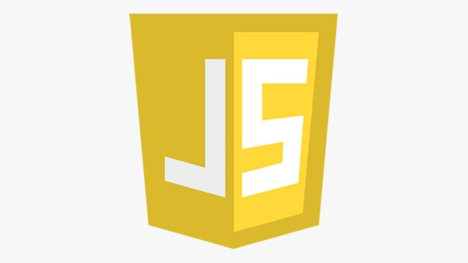
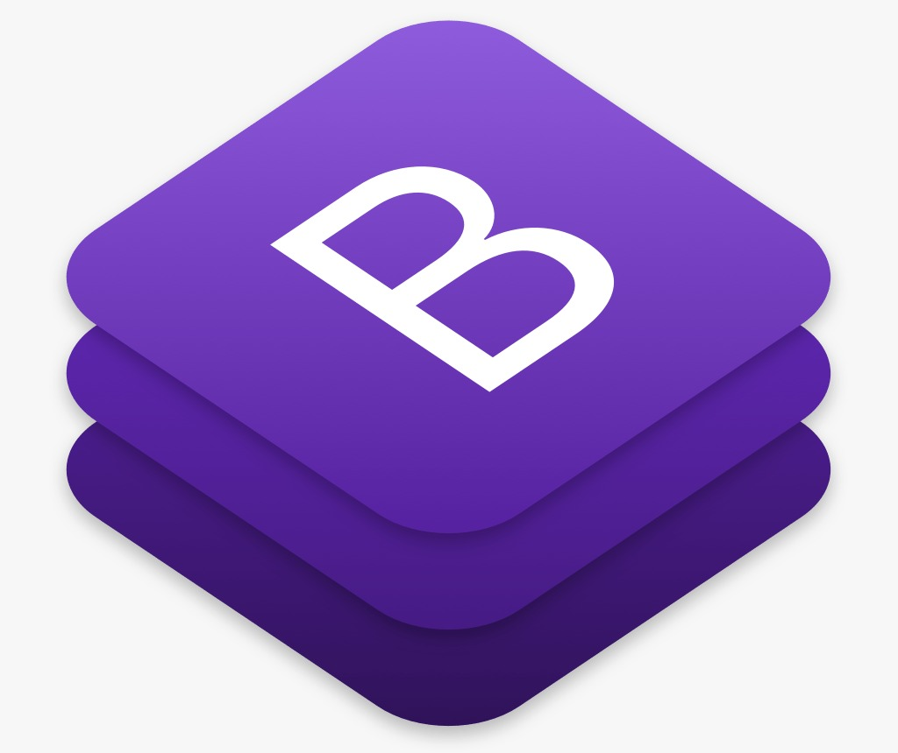

Linguagens de Programacao
Introdução
Linguagem de Programacao e uma linguagem escrita e formal que especifica um conjunto de instrucoes
e regras usadas para gerar programas (software).
Um software pode ser desenvolvido para rodar em um computador
dispositivo movel ou em qualquer equipamento que permita sua execucao.
Existem varias linguagens e elas servem para muitos propositos.
Alguns obvios, como criar um software, outros menos, como controlar um carro ou uma torradeira
HTML 5
O HTML5 trouxe diversas possibilidades e, principalmente facilidades para os desenvolvedores.
Uma delas e relacionada a validacao de formularios.
O que antes era feito com algum tempo e JavaScript,
hoje pode ser feito diretamente no HTML e em um tempo muito menor.
No passado, validações no client-side só podiam ser feitas
usando JavaScript ou algumas bibliotecas de frameworks (como o plugin jQuery validation)
). Mas isso está mudando, ou melhor, já mudou, porque a validação agora pode ser feita
usando HTML5, sem a necessidade de escrever um código complexo
de JavaScript para isso.
HTML5 inclui um mecanismo bastante sólido na validação de formulários com base nos atributos da tag input:
type, pattern e require. Graças a esses novos atributos,
você pode delegar algumas funções de verificação de dados
para o navegador.
JQUERY

jQuery é uma biblioteca de funções JavaScript
que interage com o HTML,desenvolvida
para simplificar os scripts interpretados no navegador do cliente (client-side)
Usada por cerca de 74.4% dos 10 mil sites mais visitados do mundo,
jQuery é a mais popular das bibliotecas JavaScript.
Esta biblioteca é um projeto da Fundação JS (em inglês: JS Foundation),
que por sua vez faz parte da Fundação Linux (em inglês: Linux Foundation)
e seu desenvolvimento é realizado pelo time jQuery (em inglês: The jQuery Team).
jQuery é uma biblioteca de código aberto que utiliza a licença MIT em seu código-fonte.
A sintaxe do jQuery foi desenvolvida para tornar mais simples a navegação do documento HTML,
a seleção de elementos DOM, criar animações, manipular eventos, desenvolver aplicações AJAX e criação
de plugins sobre ela. Tais facilidades permitem aos desenvolvedores criarem camadas de abstração para interações
de baixo nível de modo simplificado em aplicações web dinâmicas de grande complexidade.
JAVASCRIPT

A primeira coisa que você precisa saber: JavaScript não tem nada a ver com Java.
Java é uma linguagem server-side, como PHP, Ruby,
Python e tantas outras. A única coisa parecida entre eles é o nome.
Sabendo disso, quero que saiba que JavaScript é uma linguagem de programação
client-side. Ela é utilizada para controlar o HTML e o CSS
para manipular comportamentos na página.
Me pergunte agora: "Como assim comportamento?".
Agora eu respondo: um comportamento comum, por exemplo, é um submenu.
Sabe quando você passa o mouse em um ítem do menu,
e aparece um submenu com vários outros ítens? Pois é.
. A obrigação de fazer aparecer esse submenu é do JavaScript.
O submenu estava escondido, e quando passamos o mouse no ítem, o submenu aparece.
Todo esse comportamento quem vai executar é o JavaScript.
Bootstrap

Bootstrap. Trata-se de um framework front-end que veio
para facilitar e agilizar o trabalho,
oferecendo padrões para HTML, JavaScript e CSS.
Na prática, a principal aplicação do Bootstrap
seria na criação de sites responsivos (mobile)
. Com o Bootstrap, o profissional já não tem mais que perder tanto tempo
digitando toda uma linha de CSS novamente. Esta facilidade
se deve ao fato de que ele possui vários plugins em JavaScript (jQuery)
que tornam o seu dia-a-dia muito mais fácil. Com inúmeras
bibliotecas prontas disponíveis,
o trabalho que o desenvolvedor tem é de, praticamente,
só as incluir em seus projetos.
Wordpress
WordPress é o CMS (Gerenciador de Conteúdo) mais utilizado do mundo
na criação de sites devido a ser um sistema completo e excelente
para criar sites incríveis e que você mesmo pode gerenciar.
Um CMS é uma aplicação para a internet que permite que donos de sites,
editores e autores gerenciem seus sites e publiquem conteúdo sem precisar
de conhecimentos em programação.
O WordPress usa PHP e MySQL, linguagens que são suportadas por todos os serviços
de hospedagem de site. Mas uma hospedagem especializada em WordPress
pode dar a você muita vantagem em velocidade, desempenho e confiança.
PHP
O PHP (um acrônimo recursivo para PHP: Hypertext Preprocessor) é uma linguagem de script
open source de uso geral, muito utilizada, e especialmente
adequada para o desenvolvimento web e que pode ser embutida dentro do HTML.
m vez de muitos comandos para mostrar HTML (como acontece com C ou Perl),
as páginas PHP contém HTML em código mesclado que faz "alguma coisa"
(neste caso, mostra "Olá, eu sou um script PHP!").
O código PHP é delimitado pelas instruções de processamento (tags)
]
de início e fim que permitem que você entre e saia do "modo PHP".
O que distingue o PHP de algo como o JavaScript no lado do cliente
é que o código é executado no servidor, gerando o HTML que é então
enviado para o navegador. O navegador recebe os resultados da execução
desse script, mas não sabe qual era o código fonte. Você pode inclusive
configurar seu servidor web para processar todos os seus arquivos HTML com
o PHP, e então não há como os usuários dizerem o que você tem na sua manga.